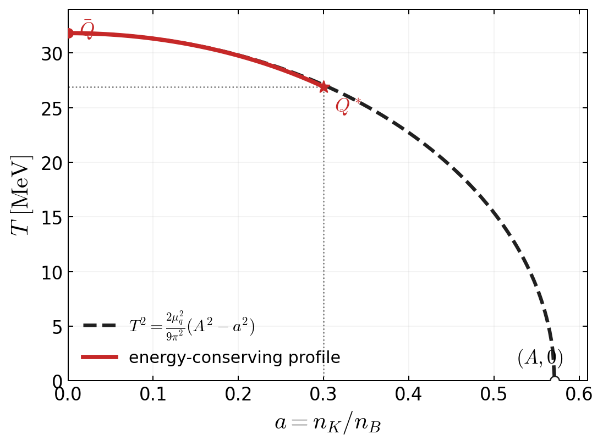

Keep \(T\) versus \(a\)
Connects directly to the analytical formula and the integral over \(a\).
This uses the energy-conserving profile at \(T_N=10\) MeV, \(B^{1/4}=180\) MeV, \(n_B^N=3n_0\), and \(a_{Q^*}=0.3\). The dashed continuation is the analytical constant-pressure relation.
